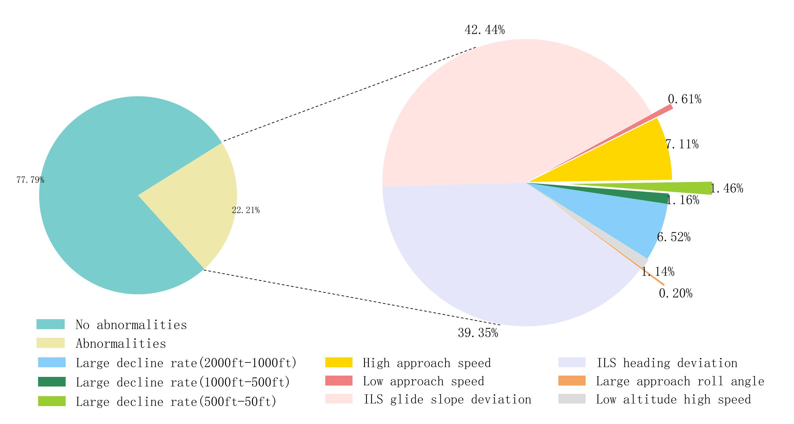
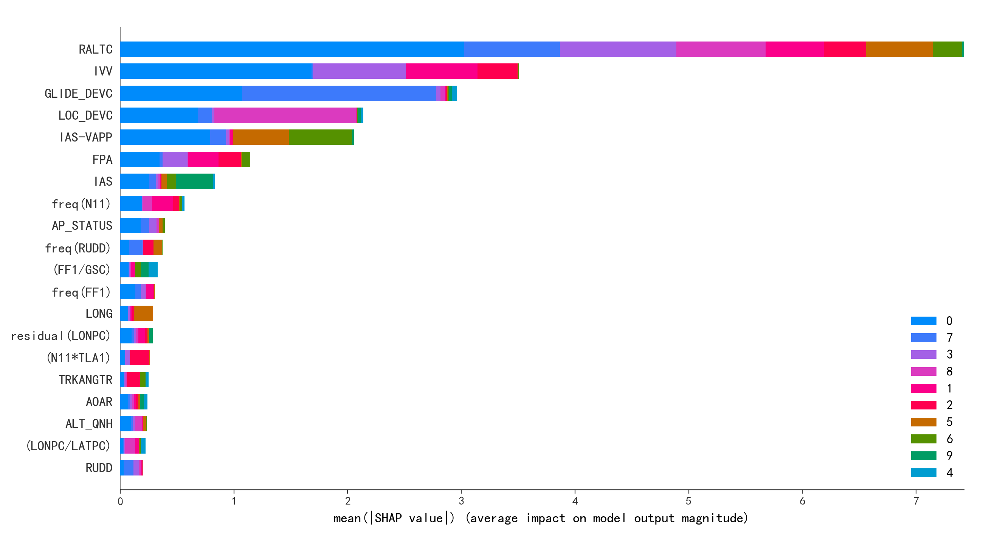
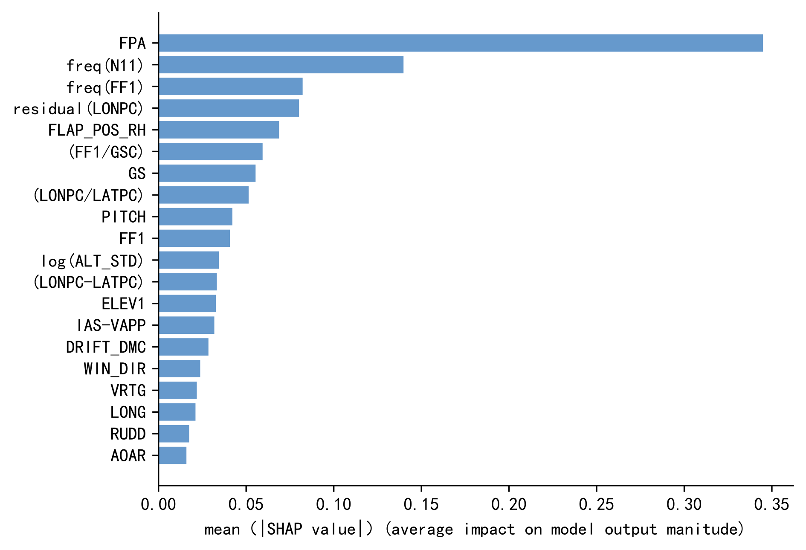
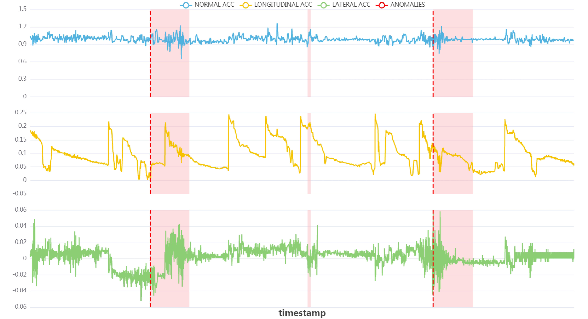
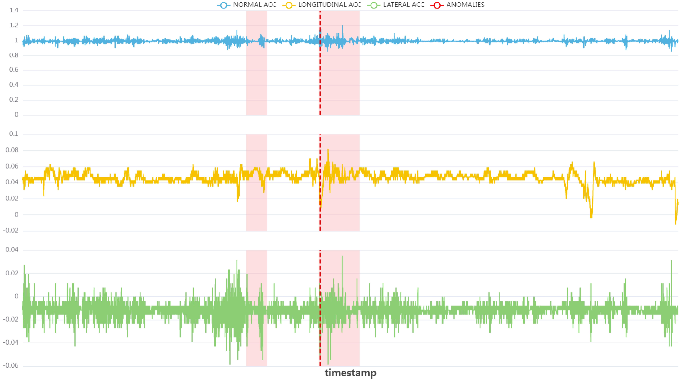
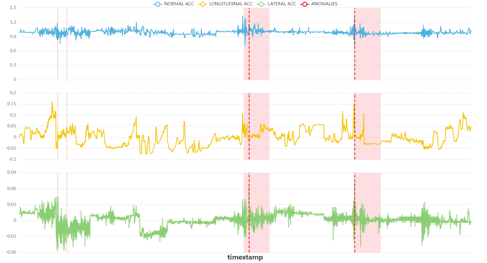
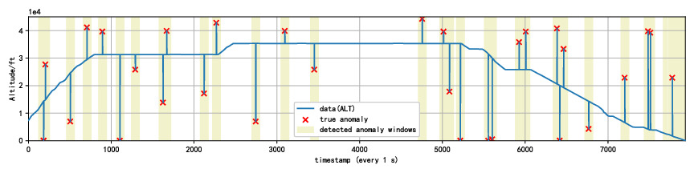
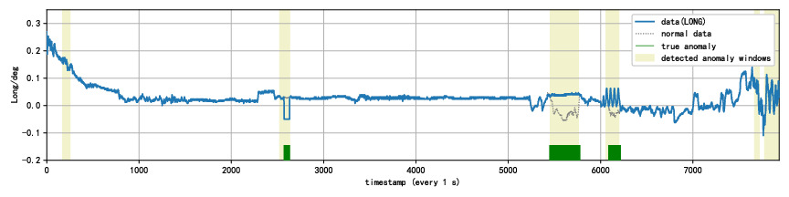

民航QAR大数据分析
飞行品质监控（Flight Operations Quality Assurance，FOQA）是保障民用航空器飞行安全的国际通用方案。飞行品质监控通过收集和分析快速存储记录器（Quick Access Recorder，QAR）的数据来监测飞行参数超限情况，识别出不符合标准的操作、存在缺陷的程序、航空器性能的衰减、空中交通管制系统的不完善等安全隐患，有助于提高机组操纵品质、改进标准操作程序、完善飞行训练大纲等。
民航飞行异常检测及成因分析
机器学习或深度学习的方法，通过QAR数据训练模型来自动学习多维度参数间的复杂关系，以及飞行异常的判别标准，基于训练的模型能够自动检测出各种异常事件;实现同一航段的不同异常事件的检测，以及多类型异常耦合事件的检测;实现更加自动化和智能化的异常事件成因分析.
|  |  |
| QAR 数据中异常事件的分布 | 多类型异常检测结果 |
|  |  |
| 异常事件成因分析(整个模型) | 异常事件成因分析(Large-Decent-Rate(2000ft-1000ft)) |
多维QAR数据异常检测
面向多维的QAR数据提出了一种新的基于LSTM的异常检测模型CVAE-LSTMAttention，该方法在单维的基础上利用卷积变分自编码器捕捉多个维度之间的相关性，能够捕获多个时间序列数据通道之间的空间信息和时间信息，对序列模式进行可解释的重建从而检测所有类型的异常.
|  |  |  |
| 爬升阶段 | 巡航阶段 | 进近阶段 |
多维时序数据（QAR）缺失修复
模型以GAN为基本架构，利用GAN网络中的生成器和判别器的对抗性特点，来获取多维时间序列中真实值的数据特征以修复缺失值。为获取多维时间序列中不同维度数据之间的关联性，本文在生成器中分别引入注意力机制（Attention Mechanism）和自注意力机制（Self-Attention Mechanism）.
针对民航QAR数据进行通用性处理操作，使得提出的模型能够针对不同航班、不同类型、不同长度的多维QAR数据的缺失值进行修复操作.

面向QAR数据的多类型异常检测通用模型
将图注意力模块与带有注意力机制的长短时记忆网络相结合，借助丰富的时空表征信息，能够更加容易地学习QAR数据中的复杂依赖关系. 实验表明，所提模型能够有效检测QAR数据中存在的不同类型异常，并具备良好的可解释性.
|  |
| 点异常检测 |
|  |
| 序列异常检测 |